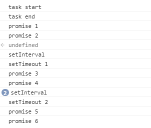

JavaScript 是门非阻塞单线程语言，因为在最初 JavaScript 就是为了和浏览器交互而诞生的。 JS 在执行的过程中会产生执行环境，这些执行环境会被顺序的加入到执行栈中。如果遇到异步的代码，会被挂起并加入到 Task（有多种 task） 队列中。一旦执行栈为空，Event Loop 就会从 Task 队列中拿出需要执行的代码并放入执行栈中执行，所以本质上来说 JS 中的异步还是同步行为。
基本概念
主线程：Javascript 执行引擎，负责程序本身的运行
同步任务：在主线程上排队执行的任务，只有前一个任务执行完毕，才能执行后一个任务
异步任务：不进入主线程、而进入"任务队列"（task queue）的任务。
回调函数（Callback）：那些会被主线程挂起来的代码。异步任务必须指定回调函数，当主线程开始执行异步任务，就是执行对应的回调函数。
任务队列（Task Queue）
任务队列，是包含多个事件的队列（也可以理解成消息的队列），是一个先进先出（FIFO）的有序的数据结构。比如IO设备完成一项任务，就在"任务队列"中添加一个事件，表示相关的异步任务可以进入"执行栈"了。
任务队列中包含以下任务：
Events：在事件目标上发送事件对象。注意，不是所有的事件都从任务队列中发送，有许多是在别的任务中发送的。Parsing：HTML parser 标记化转换任务Callbacks：回调由一个专用任务调度Using a resource：获取网络资源Reacting to DOM manipulation：DOM操作响应。比如为元素添加子节点
事件循环（Event Loop）
概念
JavaScript 执行引擎在主线程方法执行完毕，到达空闲状态时，会从任务队列中顺序获取任务来执行，这一过程是一个不断循环的过程。W3C规范
Wikipedia 定义:
In computer science, the event loop, message dispatcher, message loop, message pump, or run loop is a programming construct that waits for and dispatches events or messages in a program.
WHATWG 定义：
To coordinate events, user interaction, scripts, rendering, networking, and so forth, user agents must use event loops as described in this section. There are two kinds of event loops: those for browsing contexts, and those for workers.
小结：
事件循环（Event Loop）是一个程序结构，用于等待和发送消息和事件。
事件循环有 2 种：
- Browsing contexts
- Workers
处理模型
规范：
Event loop processing model - WHATWG
事件循环示意图：

关键点：
主线程运行的时候，产生堆（heap）和栈（stack）。栈中的代码调用各种外部API，它们在"任务队列"中加入各种事件（click，load，done）
执行栈（stack）中的代码（同步任务），总是在读取"任务队列"（异步任务）之前执行
每个浏览器环境，至多有一个事件循环（event loop）
一个事件循环可以有1个或多个任务队列（task queue）
定时器：setTimeout
使用方法：
1 | const fn = () => { console.log('timeout') } |
关键点：
返回值
timeoutID是一个正整数，表示定时器的编号，是计划执行代码的唯一标识符。这个值可以传递给clearTimeout()来取消该定时当在代码中调用
setTimeout()方法时，注册的延时方法会交由浏览器内核其他模块（timer模块，以Webkit为例，是Webcore模块提供的）处理。当延时方法到达触发条件，即到达设置的延时时间时，这一延时方法被添加至任务队列里。这一过程由浏览器内核其他模块处理，与执行引擎主线程独立fn可为字符串，但不推荐使用关于延时
delay：单位为
ms如果省略该参数，
delay取默认值0取值
0的含义是，指定某个任务在主线程最早可得的空闲时间执行，也就是说，尽可能早得执行最小值：HTML5 标准规定了
setTimeout()的第二个参数的最小值（最短间隔），不得低于4毫秒，如果低于这个值，就会使用最小值
一直以来，不同浏览器中出现这种最小延迟的情况有所不同（例如Firefox） - 从其他地方调用了
setInterval()，或者在嵌套函数调用setTimeout()时（嵌套级别达到特定深度时），都会出现超时延迟。 除了"最小延时"之外，定时器仍然有可能因为当前页面（或者操作系统/浏览器本身）被其他任务占用导致延时。最大值：浏览器包括 IE, Chrome, Safari, Firefox 以 32 个 bit 字节存储整数。这就会导致如果一个整数大于
2147483647（2^31 - 1，大约24.8 天）时就会溢出，导致定时器将会被立即执行比 delay 为 0 更小的延时，采用
window.postMessage()，参考 setTimeout with a shorter delay
重排（Reflow）与重绘（Repaint）
重排和重绘其实和 Event loop 有关，在事件循环处理模型中的 “Update the rendering” 环节中，按照以下流程处理：
- 当 Event loop 执行完
Microtasks后，会判断document是否需要更新。如果浏览器是 60Hz 的刷新率，约每16ms才会更新一次。 - 然后判断是否有
resize或者scroll，有的话会去触发事件，所以resize和scroll事件也是至少16ms才会触发一次，并且自带节流功能。 - 判断是否触发了
media query - 更新动画并且发送事件
- 判断是否有全屏操作事件
- 执行
requestAnimationFrame回调 - 执行
IntersectionObserver回调，该方法用于判断元素是否可见，可以用于懒加载上，但是兼容性不好 - 更新界面
- 以上就是一帧中可能会做的事情。如果在一帧中有空闲时间，就会去执行
requestIdleCallback回调。
任务（Task）
概念
宏任务（macro-task）：代指任务（Task），包含：
script(整体代码)setTimeoutsetIntervalsetImmediateI/OUI rendering
微任务（micro-task）：在 ES2015 规范中称为 Job，可理解为更小粒度的单项工作。包含：
PromisesObject.observeMutationObserverprocess.nextTick
[注：为了明显区分 macrotask 和 microtask，本文一般添加加短横线]
事件循环如何处理任务（tasks 和 microtasks）
每个线程有自己的事件循环，所以每个 web worker 有自己的，所以它才可以独立执行。然而，所有同属一个 origin 的 windows 共享一个事件循环，所以它们可以同步交流
事件循环不间断在跑，执行任何进入队列的 task
一个事件循环可以有多个 task source，每个 task source 保证自己的任务列表的执行顺序，但由浏览器在（事件循环的）每轮中挑选某个 task source 的 task
任务是被有序计划的（scheduled），所以浏览器可以从内部到JS/DOM，保证动作按序发生。在 tasks 之间，浏览器可能会 render updates
微任务（micro-tasks）也是被有序计划好的（scheduled），经常是为需要直接在当前脚本执行完后立即发生的事，比如 async 某些动作但不必承担新开 task 的弊端。micro-task queue 在回调之后执行，只要没有其它JS在执行中，并且在每个 task 的结尾。micro-task 中添加（嵌套）的 micro-task 也被添加到 micro-task queue 的末尾并处理。micro-task 包括 Mutation Observer callbacks 和 Promise callbacks
click, ajax, setTimeout 的回调是都是 task, 同时，包裹在一个 script 标签中的js代码也是一个 task 确切说是 macro-task
执行顺序
- JavaScript 引擎首先从 macro-task queue 中取出第一个任务（同步任务），并执行；
- 执行完毕后，将 micro-task queue 中的所有任务取出，按顺序全部执行；
- 必要的话渲染 UI（UI rendering）；
- 然后再从 macro-task queue 中取下一个，并执行；
- 执行完毕后，再次将 micro-task queue 中的全部取出；
- 循环往复，直到两个 queue 中的任务都取完。
在一个事件循环的周期(cycle)中一个 (macro)task 应该从 macrotask 队列开始执行。当这个 macrotask 结束后，所有的 microtasks 将在同一个 cycle 中执行。在 microtasks 执行时还可以加入更多的 microtask，然后一个一个的执行，直到 microtask 队列清空。
如何选择
基本来说，当我们想以同步的方式来处理异步任务时候就用 micro-task（比如我们需要直接在某段代码后就去执行某个任务，就像 Promise 一样）。
其他情况就直接用 macro-task
实战演练
1 | console.log('task start') |
题解：
将 macro-task 和 micro-task 看作是2个队列，不断的清空入栈执行：
- setInterval 和 setTimeout 1 被加入到 task，promise 1 和 promise 2 被加入到 micro-task
- 清空 micro-task，打印 promise 1 和 promise 2，执行 task 队列，打印 setInterval 和 setTimeout 1
- setInterval 被加入到 task，promise 3 和 promise 4 被加入到 micro-task，setTimeout 被加入到 task
- 清空 micro-task，打印 promise 3和 promise 4，执行 task 队列，打印 setInterval，setTimeout 2
- setInterval 被加入到 task，promise 5 和 promise 6 被加入到 micro-task
- 清空 micro-task，打印 promise 5 和promise 6，clearInterval
结果：

注：实际在 Chrome 控制台执行时，期间同时执行 setInterval 代码 2次